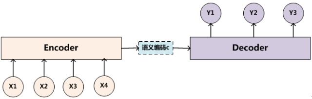
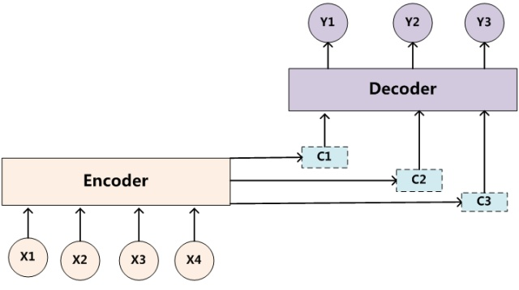
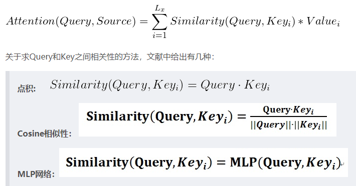
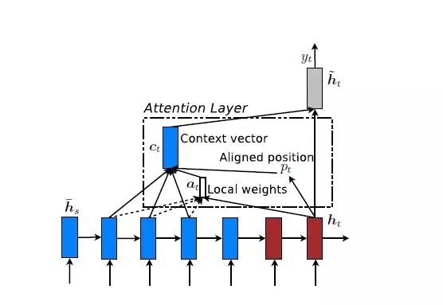
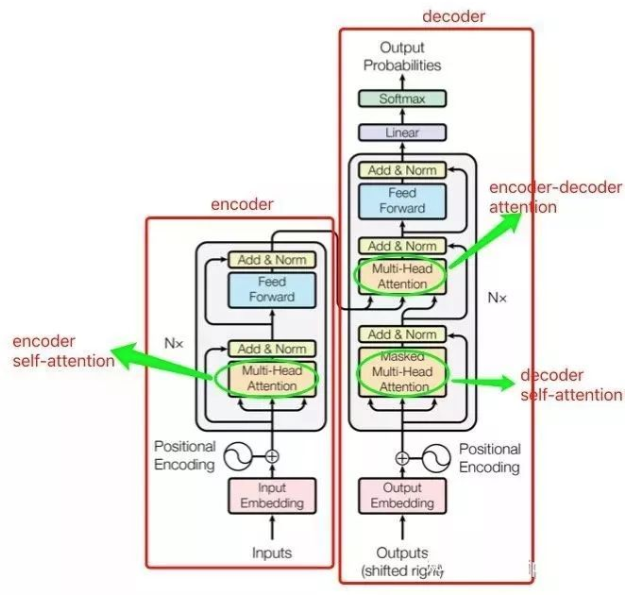
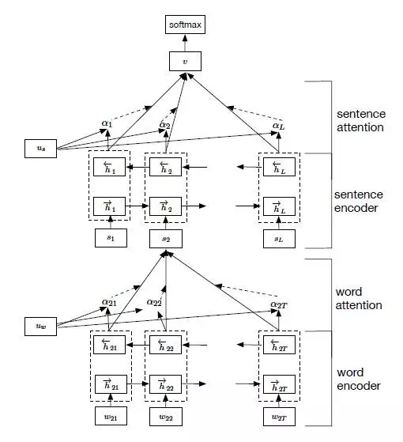
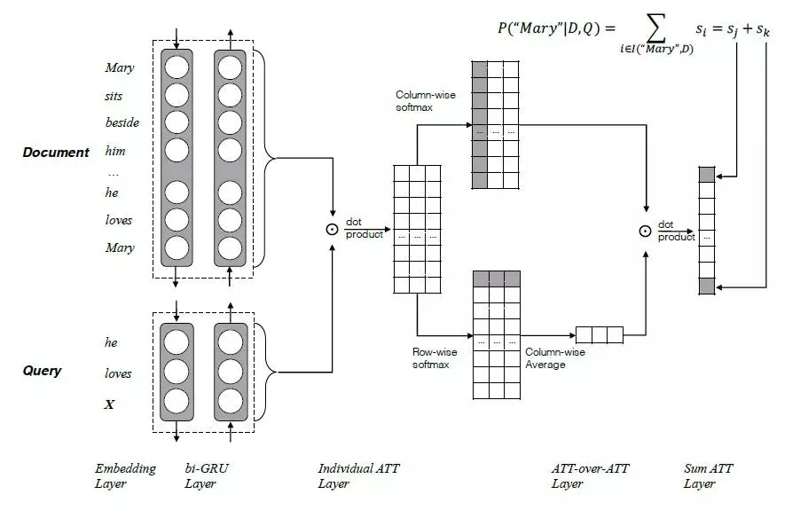
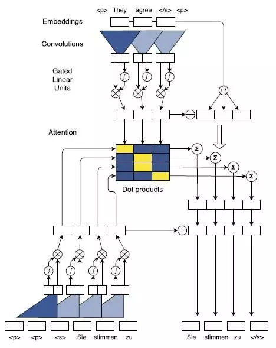
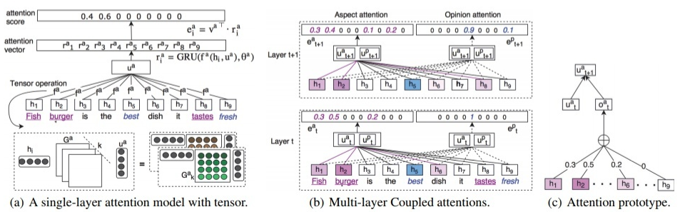

1. Attention Mechanism原理
1.1 为什么使用Attention Mechanism
- 当输入序列非常长时，模型难以学到合理的向量表示
- 输入序列不论长短都会被编码成一个固定长度的向量表示，而解码则受限于该固定长度的向量表示。
- 编解码器的结构无法解释，也就导致了其无法设计。
Neural Machine Translation by Jointly Learning to Align and Translate
1.2 Attention based model
Attention仍然理解为从大量信息中有选择地筛选出少量重要信息并聚焦到这些重要信息上，忽略大多不重要的信息
Attention machanism主要包含两个部分:
- 注意力机制需要决定整段输入的哪个部分需要更加关注；
- 从关键的部分进行特征提取，得到重要的信息。

首先给予一组输入序列$Source = <x_1, x_2, x_3, …, x_m>$和输出序列$Target = <y_1, y_2, y_3, …, y_n>$, 经过Encoder部分, 最终生成了一个编码$C$来表示前面所有信息,
对于解码器Decoder来说, 它的任务就是根据$C$和已经解码的部分来继续解下一个码. 即$y_i = G(C, y_1, y_2, …, y_{i-1})$
简单来说可以看成
$$y_1 = G©$$
$$y_2 = G(C, y_1)$$
$$y_3 = G(C, y_1, y_2)$$
从这里可以看出，在生成目标句子的单词时，不论生成哪个单词，它们使用的输入句子Source的语义编码C都是一样的，没有任何区别。但实际上对于不同的$y_i$编码器生成的向量$C$对其影响应该是不同的.

这就是Attention.

2. Attention Mechanism种类
2.1 Soft Attention 与 Hard Attention
Show, Attend and Tell: Neural Image Caption Generation with Visual Attention
我们之前所描述的传统的Attention Mechanism就是Soft Attention。Soft Attention是参数化的（Parameterization），因此可导，可以被嵌入到模型中去，直接训练。梯度可以经过Attention Mechanism模块，反向传播到模型其他部分。
相反，Hard Attention是一个随机的过程。Hard Attention不会选择整个encoder的输出做为其输入，Hard Attention会依概率Si来采样输入端的隐状态一部分来进行计算，而不是整个encoder的隐状态。为了实现梯度的反向传播，需要采用蒙特卡洛采样的方法来估计模块的梯度。
两种Attention Mechanism都有各自的优势，但目前更多的研究和应用还是更倾向于使用Soft Attention，因为其可以直接求导，进行梯度反向传播。
2.2 Global Attention 和 Local Attention
Effective Approaches to Attention-based Neural Machine Translation


local attention 可以视为 hard attention 和 soft attention 的混合体（优势上的混合），因为它的计算复杂度要低于 global attention、soft attention，而且与 hard attention 不同的是，local attention 几乎处处可微，易与训练. global attention 和 local attention 的主要区别在于 attention 所 forcus 的 source positions 数目的不同：如果 attention forcus 全部的 position，则是 global attention，反之，若只 focus 一部分 position，则为 local attention。
2.3 Self-Attention

模型共包含三个 attention 成分，分别是 encoder 的 self-attention，decoder 的 self-attention，以及连接 encoder 和 decoder 的 attention。
2.4 Hierarchical Attention
Hierarchical Attention Networks for Document Classification
Hierarchical Attention构建了两个层次的Attention Mechanism，第一个层次是对句子中每个词的attention，即word attention；第二个层次是针对文档中每个句子的attention，即sentence attention。网络结构如图10所示.整个网络结构由四个部分组成：一个由双向RNN（GRU）构成的word sequence encoder，然后是一个关于词的word-level的attention layer；基于word attention layar之上，是一个由双向RNN构成的sentence encoder，最后的输出层是一个sentence-level的attention layer。

2.5 Attention in Attention
Attention-over-Attention Neural Networks for Reading Comprehension
两个输入，一个Document和一个Query，分别用一个双向的RNN进行特征抽取，得到各自的隐状态h（doc）和h（query），然后基于query和doc的隐状态进行dot product，得到query和doc的attention关联矩阵。然后按列（colum）方向进行softmax操作，得到query-to-document的attention 值a（t）；按照行（row）方向进行softmax操作，得到document-to-query的attention值b（t），再按照列方向进行累加求平均得到平均后的attention值b（t）。最后再基于上一步attention操作得到a（t）和b（t），再进行attention操作，即attention over attention得到最终query与document的关联矩阵。

2.6 Multi-Step Attention
Convolutional Sequence to Sequence Learning

采用了多层Attention Mechanism
2.7 Multi-Dimensional Attention
Coupled Multi-Layer Attentions for Co-Extraction of Aspect and Opinion Terms

2.8 总结
attention机制其实就是学出一个权重分布，再拿这个权重分布施加在原来的特征之上，就可以叫做attention。简单来说：
- 这个加权可以是保留所有分量均做加权（即soft attention）；也可以是在分布中以某种采样策略选取部分分量（即hard attention）。
- 这个加权可以作用在原图上，也就是Recurrent Model of Visual Attention(RAM)和Multiple Object Recognition with Visual Attention(DRAM)；也可以作用在特征图上，如后续的好多文章（例如image caption)。
- 这个加权可以作用在空间尺度上，给不同空间区域加权；也可以作用在channel尺度上，给不同通道特征加权；甚至特征图上每个元素加权。
- 这个加权还可以作用在不同时刻历史特征上，如Machine Translation.
介绍了单层Attention Model、多层Attention Model以及引入知识图谱或者领域信息的Attention Model的一些变型和应用。可以发现, 如果能针对任务提出合理的假设，Attention Model会有很多种变型和应用的。
参考
深度学习中的Attention机制
深度学习中的注意力模型（2017版）
模型汇总24 - 深度学习中Attention Mechanism详细介绍：原理、分类及应用
Attention in Long Short-Term Memory Recurrent Neural Networks
Attention机制【图像】
目前主流的attention方法都有哪些